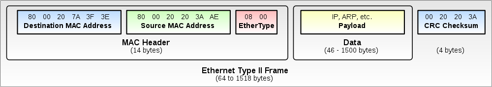

Networking
CS422/522 Lecture 13
5 November 2014
Last updated: 7 November 2014
Recap
- DMA vs PIO
- IO Protection
- File system caches: blocks and inodes
Case Study
What happens we we enter www.google.com in our browser's address bar?Networking
- Most common type of IPC
- Simple, portable:
- Works locally or across network
- Compatible across almost all OS
- Naming
- Routing
- Stream vs datagram -- connection vs connectionless
- Blocking vs non-blocking
- Synchronous vs asynchronous
Network Layout

Naming
Everything in a computer has a name. Examples?- Application layer -- URL
- Transport -- UDP / TCP Ports
- Network -- Internet Protocol (IP) address
- Data Link -- Ethernet / MAC (media access control) address
- Each address must be unique at its layer
- DNS converts IP to name and name to IP
Case Study
What happens we we enter www.google.com in our browser's address bar?- Translate www.google.com into network address
- Connect to the service hosting www.google.com
- Request file contents and display in browser
URLs
Example: http://www.example.com:80/index.html?query=hello&foo=bar- scheme: http
- domain name: www.exmaple.com
- port number: 80
- path index.html
- query string : query=hello&foo=bar
Name Resolution
- How do we know who to talk to?
- Convert www.google.com into an addressable machine
- Use the OS resolver library (gethostbyname)
- Consult nsswitch.conf for resolving order:
hosts: files dns myhostname - Check the hosts file:
#<ip-address> <hostname.domain.org> <hostname> 127.0.0.1 localhost.localdomain localhost - If not found, check via DNS server
- Add the mapping to a cache
- Return result
DNS -- Domain Name System
- Name made up of several components or domains
- Example: www.google.com:
- Top-level domain: com
- google is a subdomain of com
- www is a subdomain of google.com
- Each (sub)domain is handled by a (set) name server(s): authorative name server
- DNS name servers form a tree root servers delegate to top-level to subdomains, etc
- Recursive vs iterative
Naming -- From Your Machine
- You specify you want to access www.google.com
- It checks the hosts file, no match
- It scans your system for a list of DNS servers
- Send a DNS request to a server
- If server sends back a useful answer, stop, else repeat
- We can talk to machine that owns that URL using HTTP
- Difference between: recursive vs iterative
HTTP -- Hypertext Transfer Protocol
- Used to communicate across the Web
- Embeds the entire url:
GET /index.html?query=hello&foo=bar HTTP/1.1
Host: www.example.com - The protocol itself is stateless
- A session is maintained:
- Client is either in cookies or a comonent of the URL
- Server is in a database
- Not secure by default
Case Study
What happens we we enter www.google.com in our browser's address bar?- Use DNS to resolve www.google.com to an address
- Send an HTTP message to that address of the form:
GET /
Host: www.google.com - We need to build DNS and HTTP on top of a transport...
Datagram -- UDP
- User datagram protocol
- Unconnected
- Unreliable
- Each message sent / received fully -- like a memory page
Stream -- TCP
- Transmission Control Protocol
- Establish an explicit connection to a remote peer
- Reliable and ordered
- Sends and receives come as segments
- Stream oriented
TCP -- Connected
- Server listens on a specific port
- Client dynamically allocates a port
- Picks a sequence number and sends a syn packet to server
- Server picks a sequence number and syn-acks clients packet
- Client acks servers syn-ack
- Sequence numbers (bytes) are acked
TCP -- Reliable / Ordered
- Segments 1, 2, 3 sent
- Segments 1, 3 received, acks 1 and 3
- Only segment 1 is delivered to application
- Sender's stack resends 2
- Segment 2 received
- Segments 2 and 3 delivered to application
TCP -- Stream
- Segments 1, 2, 3 sent
- Segments need not be a fixed size
- Receives read the next bytes available
- There is no notion of packets
- Must implemented your own mechanism
Application Usage
What type of applications would use TCP or UDP?- Real time applications
- DNS
- The Web
- Skype
- Games
- BitTorrent
Case Study
What happens we we enter www.google.com in our browser's address bar?- DNS request using UDP to a server on port 53
- Response containing the network address
- Contact that server on port 80 using TCP
- Perform TCP 3 way handshake
- Perform an HTTP get request for /
- HTTP response containing data for /
- Next up ... network address and routing
Ethernet Routing
- Ethernet device has address
- No applications directly use Ethernet
- IP builds on top of Ethernet
- Broadcast Ethernet FF:FF:FF:FF:FF:FF
- Machines route "directly" to each other in a LAN
IP within a LAN
- LAN -- Local Area Network
- LAN typically denotes within the same subnet
- Subnet: 192.168.1.1-255, 192.168.1/24, netmask: 255.255.255.0
- Find each other through ARP (address resolution protocol):
- Send a broadcast Ethernet packet looking for IP
- Owner of IP responds and embeds his Ethernet address
- Typically has a gateway (router) to other networks
IP within a WAN
- WAN -- Wide Area Network -- The Internet
- Why not ARP? broadcast scalability
- Long distance routing protocols: BGP, OSPF:
- Dedicated service
- Pre-configured with addresses within their LAN
- Share these with other services
- Each service produces an IP to next host (route) map
Case Study
- DNS request to a nameserver (8.8.8.8:53) using UDP
- Cannot directly send to 8.8.8.8, redirect to gateway
- Obtain gateway Ethernet via ARP
- Forward packet through gateway: its Ethernet, but 8.8.8.8 IP Address
- Gateway checks for next hop and forwards
- Repeat until arrived
- ...
- DNS receives request, sends back answer
- It has no direct connection, sends to default gateway...
- ...
Case Study (2)
- Web browser has IP
- Web browser begins TCP connection to that IP at port 80, default http
- Sends HTTP Get request
- No direct connection...
- ...
Ethernet Packet
IP Packet
UDP Packet

TCP Packet

Blocking vs Non-Blocking
- By default all calls are blocking
- Receives only complete if data is available
- Sends only complete if the data can be written to a socket buffer
- Inefficient, when?
- Can use poll / select on non-blocking sockets
- Returns a list of sockets that may be available for performing an operation
Synchronous vs Asynchronous
- Synchronous occur in the same execution context
- Asynchronous occur in a callback
- Asynchronous compares to Non-Blocking, main thread does not wait
- Good for infrequent operations that might block main thread, such as?
Network Communication
- Not all machines read integers in the same order
- Network order is defined to be big endian
- Alternatively use serialization
UDP Client Example
struct sockaddr_in saddr;
char buf[BUFSIZE];
struct hostent *srv = gethostbyname(hostname);
int sockfd = socket(AF_INET, SOCK_DGRAM, 0);
saddr.sin_family = AF_INET;
memcpy(srv->h_addr, saddr.sin_addr.s_addr, srv->h_length);
saddr.sin_port = htons(portno);
printf("Please enter msg: ");
fgets(buf, BUFSIZE, stdin);
int sl = sizeof(saddr);
int n = sendto(sockfd, buf, strlen(buf), 0, &saddr, sl);
n = recvfrom(sockfd, buf, strlen(buf), 0, &saddr, &sl);
printf("Echo from server: %s", buf);
UDP Server Example
struct sockaddr_in saddr, caddr;
int clen = sizeof(caddr);
char buf[BUFSIZE]; /* message buf */
int sockfd = socket(AF_INET, SOCK_DGRAM, 0);
saddr.sin_family = AF_INET;
saddr.sin_addr.s_addr = htonl(INADDR_ANY);
saddr.sin_port = htons(portno);
bind(sockfd, (struct sockaddr *) &saddr, sizeof(saddr));
UDP Server Example (2)
while (1) {
int n = recvfrom(sockfd, buf, BUFSIZE, 0, &caddr, &clen);
struct hostent *hostp = gethostbyaddr(
(const char *)&caddr.sin_addr.s_addr,
sizeof(caddr.sin_addr.s_addr), AF_INET);
char *hostaddrp = inet_ntoa(caddr.sin_addr);
printf("Datagram from %s (%s) %d/%d bytes: %s\n",
hostp->h_name, hostaddrp, strlen(buf), n, buf);
n = sendto(sockfd, buf, strlen(buf), 0, &caddr, clen);
}
TCP Client Example
struct sockaddr_in saddr;
char buf[BUFSIZE];
struct hostent *srv = gethostbyname(hostname);
sockfd = socket(AF_INET, SOCK_STREAM, 0);
saddr.sin_family = AF_INET;
memcpy(srv->h_addr, &saddr.sin_addr.s_addr, srv->h_length);
saddr.sin_port = htons(portno);
printf("Please enter msg: ");
fgets(buf, BUFSIZE, stdin);
connect(sockfd, &saddr, sizeof(saddr));
int n = send(sockfd, buf, strlen(buf), 0);
n = recv(sockfd, buf, BUFSIZE, 0);
printf("Echo from server: %s", buf);
TCP Server Example
struct sockaddr_in saddr, caddr;
int clen;
char buf[BUFSIZE]; /* message buffer */
int lfd = socket(AF_INET, SOCK_STREAM, 0);
saddr.sin_family = AF_INET;
saddr.sin_addr.s_addr = htonl(INADDR_ANY);
saddr.sin_port = htons((unsigned short)portno);
bind(lfd, (struct sockaddr *) &saddr, sizeof(saddr));
listen(lfd, 5);
TCP Server Example (2)
while (1) {
int afd = accept(lfd, (struct sockaddr *) &caddr, &clen);
struct hostent *hostp = gethostbyaddr(
(const char *)&caddr.sin_addr.s_addr,
sizeof(caddr.sin_addr.s_addr), AF_INET);
char *hostaddrp = inet_ntoa(caddr.sin_addr);
int n = recv(afd, buf, BUFSIZE, 0);
printf("Connection from %s (%s) %d/%d bytes: %s\n",
hostp->h_name, hostaddrp, strlen(buf), n, buf);
int n = send(afd, buf, strlen(buf), 0);
close(afd);
}
Labs
- Lab 6b has been assigned
- Lab 7
Next Time
VirtualizationMonday 1:00PM